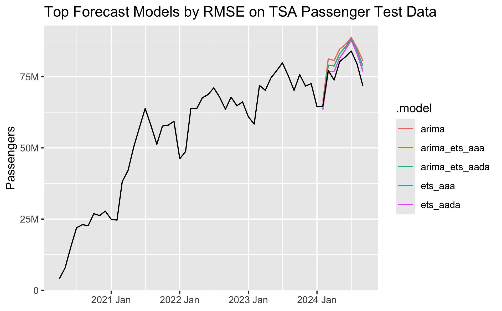

2024-10-05
If we want to create a forecast in R for the TSA Passenger data to predict passenger volumes in the future, we can use the tidyverts packages `fable`, `tsibble`, and `feasts`.
These packages apply tidy data principles to time series data and forecasting. They were coauthored by the forecasting great Rob Hyndman. If you are interested in learning more about forecasting, I highly recommend Rob Hyndman and George Athanasopoulos's fantastic textbook: Forecasting: Principles and Practice (3rd Edition) (FPP3), which uses these tidyverts packages and workflows.
The historical TSA Passenger data that we have looks like this:

We recently learned that our models will likely perform best if we ignore pre-Covid data and just assume history begins at April 2020. So we will use that in our model selection and final forecasts here.
There is clear seasonality in the data, and there has been an upward trend coming out of the Covid downturn.

The fable package provides several time series models to choose from. We can evaluate which models perform the best by breaking our data into separate train/test sets. We then fit each model on the training data, generate a forecast from each model over the test set time period, and we evaluate each model's forecast against our test set to measure accuracy.
We'll start with four simple baseline models that allow us to compare our more complex models against simple but still effective baselines. We'll use the ARIMA function to find the best fitting ARIMA model, and we'll try four different ETS models. We know that trend and seasonality is likely to continue, so we will limit ourselves to just these ETS models, but you could try others. Alternatively, the ETS() function can select the best-fitting ETS model for you, just like the ARIMA() function.
fit <- train |> model(
# Baseline models
mean = MEAN(passengers),
naive = NAIVE(passengers),
drift = NAIVE(passengers ~ drift()),
snaive = SNAIVE(passengers),
# tslm = TSLM(passengers ~ trend() + season()),
# Auto-ARIMA and Auto-ETS models
arima = ARIMA(passengers, stepwise=FALSE, approximation=FALSE),
# ets = ETS(passengers),
# Specify ETS models
ets_aaa = ETS(passengers ~ error('A') + trend('A') + season('A')),
ets_aada = ETS(passengers ~ error('A') + trend('Ad') + season('A')),
ets_aam = ETS(passengers ~ error('A') + trend('A') + season('M')),
ets_aadm = ETS(passengers ~ error('A') + trend('Ad') + season('M'))
Thankfully our ARIMA and ETS model do outperform our baselines. The arima model performs the best and ets_aada is second. The models with multiplicative seasonality don't perform as well and actually underperform some of our baselines.
One nice feature of fable is that it makes it very easy to combine or ensemble multiple forecast models. Hyndman and Athanasopoulos describe this as such:
"The results have been virtually unanimous: combining multiple forecasts leads to increased forecast accuracy. In many cases one can make dramatic performance improvements by simply averaging the forecasts."
Based on our results, we'll try creating combined forecasts of the arima model with the ets_aada and ets_aaa models.
# Create combined models
fcst <- fit |> mutate(
arima_ets_aaa = (arima + ets_aaa) / 2,
arima_ets_aada = (arima + ets_aada) / 2,
) |> forecast(h = months_to_forecast)
# View model forecast accuracy against test set
accuracy(fcst, df) |>
arrange(RMSE)
After adding in our two combined models, the plain ARIMA model still performs the best, but the two combined models are second and third.
We can plot the forecasts from each model to see how they compare:
Based on these results, I would pick either the arima or the arima_ets_aada model. While the arima model is more accurate compared to the test set, over the long term I would probably prefer to use an ensemble model.
Another approach to time series model evaluation is cross validation. This is a little different from cross validation you may have used in other machine learning contexts. With time series data, we start with an initial base set of only n historical data points, fit our models, calculate forecasts, and measure accuracy. We then repeat the process by adding one additional data point (or more) to the base set of historical data with each step, fit the moels, forecast, and measure accuracy. In each iteration we're forecasting one or more steps out. Prof. Hyndman uses this visualization below in his textbook to help explain the process. The blue dots are the base history we're using to fit our models, and the orange dots are the future points we're trying to estimate:

One neat benefit of this approach is that if we're forecasting more than one step ahead in each iteration we can see the average model accuracy across all of the CV sets at 1 to n steps out. As we'd expect, model accuracy gets worse the further out we try to forecast. We can see that the best performing model across the CV sets is the ETS(A,Ad,A) model, and the second best is the combination of ARIMA and ETS(A,Ad,A).

The total model accuracy across all CV steps and forecast periods is below. It's also possible to calculate the accuracy just for n specific forecast steps out.

Based on what we've seen by evaluating different models with a train/test split and cross-validation, we know that the ARIMA and ETS(A,Ad,A) models tend to perform the best, along with the combination of the two. The train/test split method put ARIMA at the top, but cross validation put ETS(A,Ad,A) at the top. Ultimately, I would choose the combination of the two so that we can hopefully gain from the benefits of ensembling.
Let's perform a final forecast, fitting ARIMA and ETS(A,Ad,A) models on the full dataset. This is what each model, and the combined model, look like. We can see that the arima forecast is slightly lower and the ets_aada forecast is slightly higher, and the combined model is the average of the two, running through the middle. The 80% and 95% prediction intervals are shown by default in the autoplot() function in the tidyverts packages. Both models give very similar forecasts, and it looks like they're accurately capturing a very reasonable trend and seasonality.
Finally, let's plot just the point forecast of the final chosen combined model with the full history.
In this case, we're forecasting through the end of this year and through all of next year. Let's look at what the forecsat is telling us the total annual growth will be in TSA passengers for this year and next.
# Calculate annual percent change in TSA Passengers
df |>
as_tibble() |>
mutate(Year = year(date)) |>
group_by(Year) |>
summarize(passengers = sum(passengers)) |>
arrange(Year) |>
mutate(pct_chg = percent((passengers / lag(passengers) - 1)))

The forecast is showing 2024 will finish the year up +4.9% and 2025 will growth +3.8%. This looks entirely reasonable.